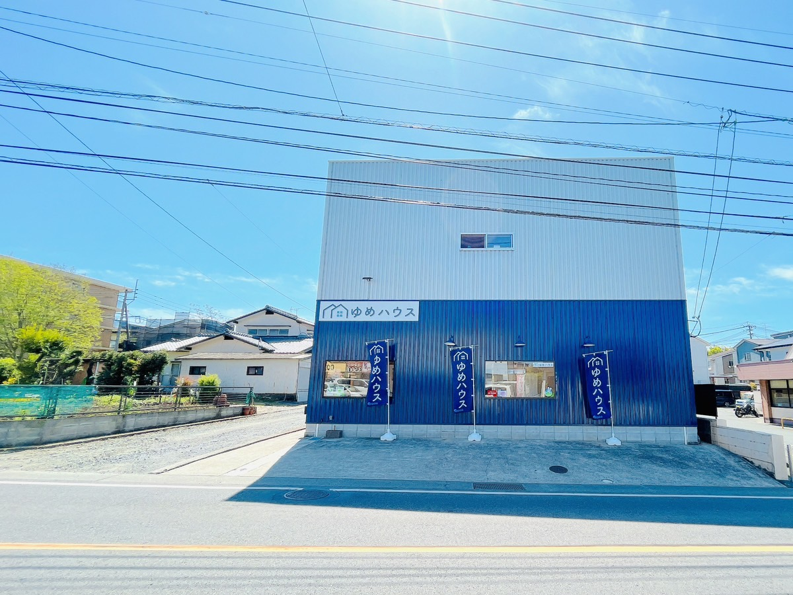

熊本市東区の不動産相談
熊本市東区で住まい探しの相談を。
物件、住宅ローン、校区、通勤、駐車台数まで。購入前の不安を一つずつ整理します。
対応エリア熊本市東区を中心にご提案
資金計画月々支払い・事前審査から相談
相談範囲購入・売却・賃貸管理まで対応
相談メニュー
ご相談内容
物件探し、資金計画、売却・管理まで、今の状況に合わせて相談できます。
選ばれる理由
ゆめハウスが選ばれる理由
地域の生活圏と資金計画をふまえて、無理のない住まい探しをお手伝いします。
ローンから逆算
買える価格ではなく、続けられる月々支払いから物件候補を絞ります。
資金計画
熊本の生活圏で比較
校区、駐車台数、買い物、通勤距離など、暮らしの条件で整理します。
生活圏
売る・貸すも同時に相談
住み替えでは、売却・賃貸管理・購入後の支払いまで並べて見ます。
住み替え
購入の流れ
購入までの流れ
相談から入居までの全体像を先に見せることで、問い合わせ前の不安を減らします。
無料相談
家賃、貯蓄、希望エリア、校区、駐車台数を確認します。
資金計画
月々支払い、諸費用、頭金、事前審査の進め方を整理します。
物件比較
価格、立地、周辺環境、将来の売りやすさを比較します。
内覧・申込
気になる物件を見学し、必要な条件を確認します。
契約・入居
契約、ローン、引渡しまでスケジュールを管理します。
相談事例
相談事例
実際の悩みに近い入口を用意し、自分ごと化しやすくします。
家賃と同じくらいで買えますか？
中央区で中古マンションを検討。諸費用と管理費込みで月々支払いを比較しました。
ローン不安
子どもの校区を変えずに探したい
東区で新築戸建てを検討。校区、駐車2台、通勤時間を同時に整理しました。
ファミリー
戸建てを売るか貸すか迷っています
住み替え前に、査定額、賃料、管理費、購入後の支払いを並べて判断しました。
住み替え
よくある質問
よくある不安
問い合わせ前の代表的な不安を先に解消します。
まだ買うと決めていなくても相談できますか？
はい。今の家賃、貯蓄、希望条件から、買う場合と買わない場合を比較する相談としてご利用ください。
住宅ローンに自信がありません。
借入可能額だけでなく、無理のない月々支払い、諸費用、頭金、事前審査の進め方まで整理します。
売却や賃貸管理も同時に相談できますか？
はい。住み替えでは、売る、貸す、買うを同じ窓口で比較できます。
